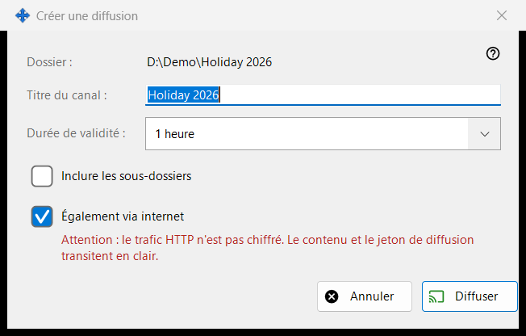
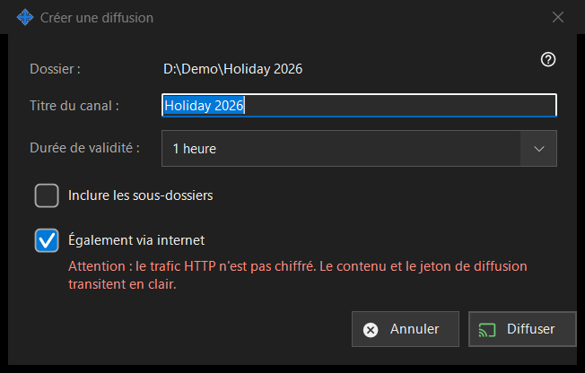

Créer une diffusion
Objectif
Règle une diffusion avant sa création : son titre, sa durée de vie et si elle atteint au-delà du réseau local. Elle s'ouvre depuis «Créer une diffusion..» dans la fenêtre des diffusions pour le fichier ou le dossier choisi. Rien n'est créé ni envoyé tant que vous ne cliquez pas sur «Diffuser».


Dans cet ordre
- Vérifiez le chemin sur la première ligne (Dossier : ou Fichier :).
- Modifiez «Titre du canal :» ; il commence par le nom du dossier ou du fichier.
- Choisissez «Durée de validité :».
- Pour un dossier, cochez «Inclure les sous-dossiers» si vous en avez besoin.
- Gardez ou décochez «Également via internet».
- Cliquez sur «Diffuser» (Entrée) ou «Annuler» (Échap).
Les éléments
Titre et durée de validité
Le titre du canal est ce qu'affiche la liste des diffusions. La durée de validité propose 24 heures (par défaut), 1 heure, 7 jours et «Jusqu'à révocation», qui n'a pas de date de fin et reste valable jusqu'à ce que vous la révoquiez dans la fenêtre des diffusions.
Inclure les sous-dossiers
N'apparaît que lorsque la cible est un dossier, et désactivée par défaut. Elle détermine si les fichiers des sous-dossiers du dossier diffusé sont inclus.
Également via internet
Cochée, sauf si les réglages de partage limitent les exports au réseau local. Quand elle est cochée, le lien contient aussi, à côté de l'adresse locale, les adresses internet IPv6 et à port redirigé de ce PC, si elles sont connues. La cocher fait passer la durée de validité de 24 heures à 1 heure (vous pouvez la rétablir) et affiche un avertissement rouge : le trafic HTTP n'est pas chiffré, si bien que le contenu et le jeton de la diffusion circulent en clair. Quiconque possède le lien peut lire les fichiers de la diffusion jusqu'à son expiration ou sa révocation. Décochez la case pour garder la diffusion dans le réseau local.
Diffuser et Annuler
«Diffuser» se contente de renvoyer vos choix à la fenêtre des diffusions, qui crée alors la diffusion et copie son lien. «Annuler» ferme la boîte de dialogue et ne crée rien.
Paramètres du gestionnaire · Paramètres de partage SFTP · Paramètres du serveur d’échange